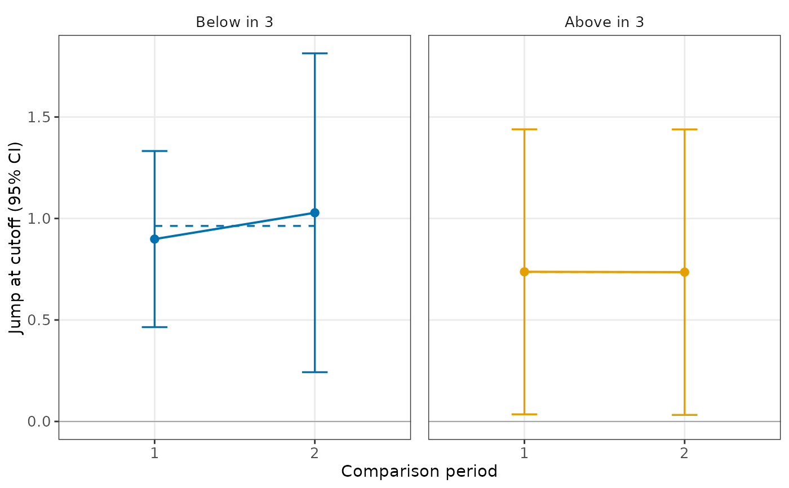

Plot a constant-within-type-confounding test: each type's confounding jump over time
Source:R/plots.R
plot.rd_trendcell.RdOne panel per type: its local-linear jump in each comparison period with its 95% interval,
and a dashed reference line, the type's average jump (trend = "constant") or the
least-squares line through its jumps (trend = "linear"). Under the null the points sit on
the dashed line, up to sampling error.
Usage
# S3 method for class 'rd_trendcell'
plot(x, ...)Arguments
- x
an object returned by
rd_trendcell().- ...
unused.
See also
Other tests of the assumptions:
plot.rd_compstable(),
plot.rd_homog(),
plot.rd_typecont(),
plot_switchers(),
rd_compstable(),
rd_homog(),
rd_trendcell(),
rd_typecont()
Examples
tr <- rd_trendcell(rddid_sim_pv, y = "Y", x = "R", time = "year", id = "id", t_rd = 3)
if (requireNamespace("ggplot2", quietly = TRUE)) plot(tr)
